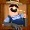

5-reel 20-line slots
The objective of Funky Fruits Farm is to obtain winning symbol combinations by spinning the reels.
To play the game:
- Line bets are chosen by clicking + and – below Line Bet to increase or decrease the amount.
- Paylines can be activated and their shape displayed by progressively clicking + and – below Lines. Paylines can also be activated by using the numbered buttons on either side of the reels. Selecting a high payline includes all the lower ones too. For example, selecting payline 6 also activates paylines 1 through 5. Clicking Bet Max activates all paylines with the currently selected bet per line and spins the reels.
- Total bet per game round = line bet X active paylines.
- Clicking Spin spins the reels with the current selection of lines and line bets. During the reel spins the Spin button changes intoStop. Clicking Stop ends the spin animation and immediately displays the spin result.
- Reels can also be spun using the Auto Play function. Mouse over the Auto Play button to display the list of options. Select the number of spins to be played automatically or choose Until Feature to spin until the Funky Fruits Bonus round is triggered. Clicking on an option starts the Auto Play function. The Auto Play button changes into Stop during the Auto Play mode. The Auto Play mode ends when the reels have been spun the number of times determined by the player, or when the Funky Fruits Bonus round is triggered if you chose Until Feature, or when you click Stop.
- Wins are calculated according to the paytable. Line win = line bet X corresponding multiplier according to the paytable. Scatter win = total bet X corresponding multiplier according to the paytable. The paytable can be accessed via the Info page.
- On a given payline, only the highest payline winning combination pays while simultaneous winnings on different paylines are accumulated.
- In the case of a winning spin, the Win field displays the accumulating winnings. The Win ticker can be stopped by clicking anywhere on the screen to display the total win amount immediately.
- Payline wins and the total win are also displayed on the strip located at the bottom of the reels or the game window.
Info page:
- Clicking Info opens the reference screen describing different game components. Clicking the arrow buttons at the lower right-hand corner of the screen enables navigating between the different info screens.
- The Paytable screen shows all winning combinations. When opened after a winning spin, the winning symbol combinations (number of symbols and bet multiplier) are highlighted and blink.
- The Funky Fruits Bonus screen explains the symbol combinations necessary to enter the Bonus round and describes its rules.
- The Paylines screen illustrates all possible payline combinations and explains the payout rules in the game.
- Clicking Back exits the Info screen and returns to the game.
Paylines:
- Active paylines are represented by lines that appear over the reels. Paylines can be activated and their shape displayed by progressively clicking + or – below Lines.
- Only active paylines can register wins.
- There is a difference between the line bet and the total bet. The line bet shows how much is being bet on a single payline. The total bet shows how much is being bet in total on the game round. Payouts shown in the paytable are multiplied by the line bet.
The Scatter symbol is an exception to these rules. More information about the Scatter symbol can be found below.
About payouts:
- Payouts are listed on the Paytable screen. To find the possible win amount, the line bet must be multiplied by the payout.
- If two payline winning combinations occur on the same line, the higher of them is paid out. If more than one active payline has a winning combination, the winnings are accumulated.
- Winning combinations must start from the left most reel, and the symbols have to be consecutive.
The Scatter symbol is an exception to these rules. More information about the Scatter symbol can be found below.
Wild Symbol
The Wild symbol appears anywhere on the reels both during main game and during Free Games. It can stand for any other symbol, except , to make the best possible combination.
There is also a separate payout for 2 or more Wild symbols on an active payline, as seen in the Paytable. This is paid out instead of the regular symbol win if the win amount from Wilds is larger than the win from the regular symbols (by Wild standing in).
Note: Whenever substitutes for a regular symbol in any winning combination along an active payline, it doubles the resulting payout.
Stacked Wilds
is stacked on all reels. This means that the Wild symbols lay one on top of the other on the reels. All positions on the reels covered by Stacked Wilds act as Wild and can stand for any other symbol, except .
Scatter Symbol
The Scatter symbols do not have to occur on any particular payline. If there are 2 or more Scatters in any position in the spin results, the payout earned is multiplied by the total bet and added to payline winnings.
Whenever 3 or more appear in any position on the reels simultaneously during main game, the Funky Fruits Bonus round is triggered as described below.
Whenever 3 or more appear in any position on the reels simultaneously during Free Games, 15 more Free Games are triggered. More information about the Free Games can found here.
Funky Fruits Bonus
3 or more appearing simultaneously in any position in the main-game spin results trigger the Funky Fruits Bonus round.
To start the Funky Fruits Bonus, click on Click to Start. You are initially awarded 8 Free Games with a multiplier of x2.
5 fruits appear on the screen that follows. Each of them stands either for 7, 10, or 15 additional Free Games, or a Free Games win multiplier of x5 or x8. Pick 2 of the fruits by clicking one at a time to add more Free Games to the initial 8, to raise the initial Free Games results multiplier of x2, or both. Thus you can win up to 33 Free Games or a multiplier of up to x15 including the initially awarded ones.
Note: The Funky Fruits Bonus round cannot be retriggered during Free Games.
As the Funky Fruits Bonus round ends, click Continue for the Free Games to begin. Free Games round starts applying the rewards won during the Bonus round.
3 or more appearing simultaneously in any position in the Free Games spin results, trigger 15 more Free Games. Thus the Free Games round can be retriggered infinitely.
During the Free Games, the reels are spun automatically using the same number of lines and bets per line as on the spin that won the Funky Fruits Bonus. After each spin, the win is displayed in the Win field. The Free Games Win field shows the accumulated winnings from the current Free Games.
After all Free Games have been completed, a result board summarizes the winnings. Game win shows the winnings that were received from the spin that won the free games. Feature win shows the winnings that were received during the Free Games. Total win shows the accumulated winnings (Game Win and Feature Win added up).
Clicking Continue will return you to the main game. When returning to the main game, clicking anywhere on the screen stops the win ticker and displays the full prize. Free Game wins are added to the payline and Scatter wins.
If the Funky Fruits Bonus has been triggered during the Auto Play mode, the Bonus round begins after the player clicks on Click to Start. When all Free Games have been played and the player clicks Continue on the screen summarizing the Free Games win, the Auto Play mode resumes. When returning to the main game, clicking anywhere on the screen stops the win ticker and displays the full prize.
Return to Player
The theoretical percentage return to player (RTP) is 92.07%.